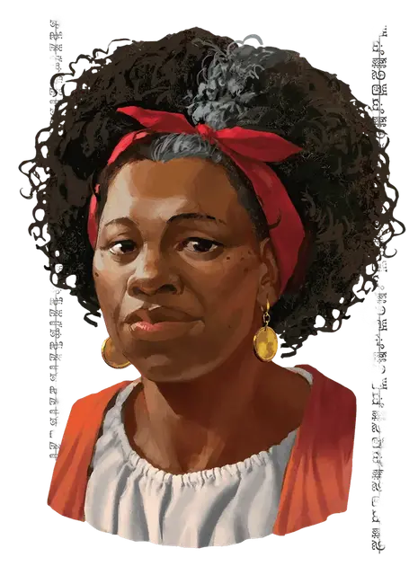

Ургала Мелтимер
Urgala Meltimer
Средний Гуманоид (Человек тёрами), законно-добрый, именной НИП

Класс Доспеха 12 (кожаный доспех)
Хиты 52 (8к8 + 16)
Скорость 30 футов
| мод | спас | ||
|---|---|---|---|
| СИЛ | 16 | +3 | +3 |
| ЛОВ | 13 | +1 | +1 |
| ТЕЛ | 14 | +2 | +2 |
| мод | спас | ||
|---|---|---|---|
| ИНТ | 12 | +1 | +1 |
| МДР | 14 | +2 | +2 |
| ХАР | 13 | +1 | +1 |
Навыки Атлетика +5, Запугивание +3
Чувства пассивное Восприятие 12
Языки Общий, Великаний
Опасность 0
Бонус мастерства +2
Особенности
Убийца гигантов. Любая атака оружием, совершенная Ургалой против гиганта, наносит дополнительный урон 7 (2к6) при попадании.
Информация для отыгрыша. Отставная авантюристка Урлага владеет респектабельной таверной под названием Нортшилдский Дом, и она не хочет видеть её или дома своих соседей разрушенными. Она на дух не выносит монстров и задир.
Идеал. : «Мы живем в жестоком мире, и порой жестокость необходима для выживания».
Привязанность. : «Мой дом это моя жизнь. Осмелься ему угрожать и тебе не поздоровится»
Слабость. : «Я знаю какими коварными и жадными могут быть приключенцы. Я не верю им, никому из них.»
Действия
Мультиатака. Ургала совершает две атаки своим моргенштерном или своим коротким луком.
Моргенштерн. . Рукопашная атака оружием: +5 к попаданию, досягаемость 5 фт., одна цель. Попадание: 7 (1к8+3) колющего урона.
Короткий лук. . Дальнобойная атака оружием: +3 к попаданию, дистанция 80/320 фт., одна цель. Попадание: 5 (1к6+1) колющего урона. Ургала носит с собой 12 стрел.